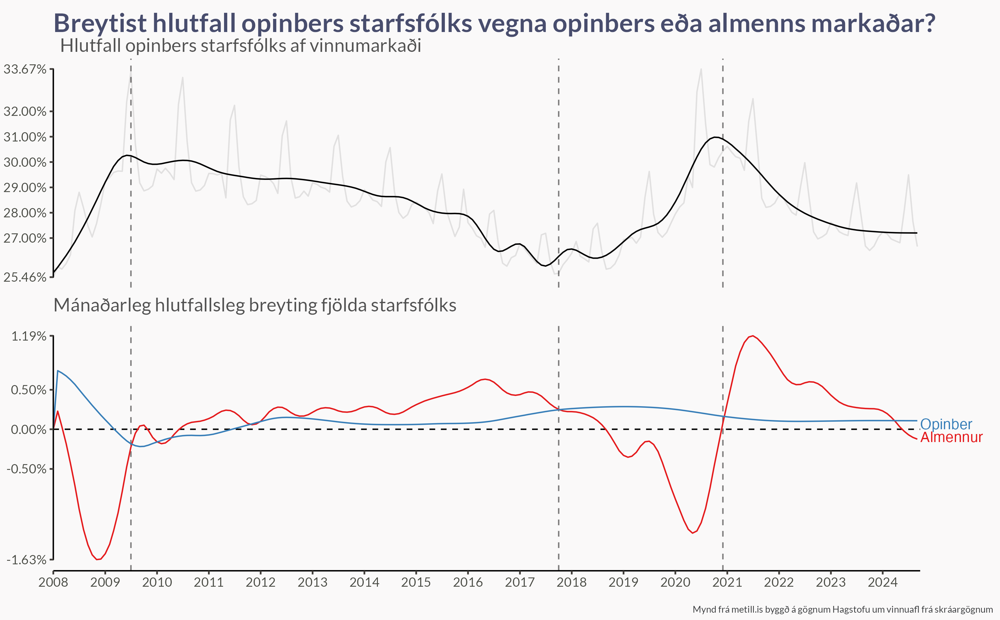
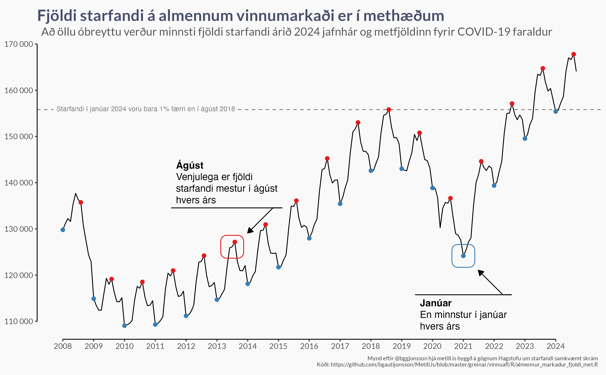

Fjöldatölur eftir rekstrarformum |
|||||
|---|---|---|---|---|---|
Samkvæmt nýjustu tölum Hagstofu |
|||||
| Dagsetning | Fjöldi starfandi | Hlutfall (%) | |||
| Nýjast | Undanfarið ár | Nýjast | Undanfarið ár | ||
Opinbert starfsfólk |
|||||
B2, C2 og D4: opinber fyrirtæki |
1 ágú. 2024 | 4.310 | 1,9% | ||
K1: ríkisstofnun |
1 ágú. 2024 | 27.650 | 12,0% | ||
K2: stofnun sveitarfélags |
1 ágú. 2024 | 33.661 | 14,6% | ||
K: aðrar opinberar stofnanir |
1 ágú. 2024 | 1.285 | 0,6% | ||
Samtals |
1 ágú. 2024 | 66.906 | 29,0% | ||
Almennur vinnumarkaður |
|||||
AX og E: einkahlutafélög |
1 ágú. 2024 | 114.314 | 49,5% | ||
B: einkarekin sameignarfélög |
1 ágú. 2024 | 2.083 | 0,9% | ||
C: einkarekin samlagsfélög |
1 ágú. 2024 | 2.579 | 1,1% | ||
D & F: einkarekin hluta- og samlagshlutafélög |
1 ágú. 2024 | 25.307 | 11,0% | ||
G: samvinnufélög |
1 ágú. 2024 | 963 | 0,4% | ||
H: sjálfseignarstofnanir |
1 ágú. 2024 | 3.057 | 1,3% | ||
L & M: spari- og lífeyrissjóðir |
1 ágú. 2024 | 381 | 0,2% | ||
N & P: félagasamtök |
1 ágú. 2024 | 6.923 | 3,0% | ||
R & Z: erlend félög |
1 ágú. 2024 | 192 | 0,1% | ||
Rekstur á eigin kennitölu |
1 ágú. 2024 | 8.185 | 3,5% | ||
Samtals |
1 ágú. 2024 | 163.984 | 71,0% | ||
| Heildarfjöldi | — | 230.890 | — | 100,0% | — |
Gögnin
Lýsing
Gagnasafnið á bak við þessa skýrslu er gagnasafn Hagstofu:
Þar er starfandi einstaklingum skipt upp meðal annars eftir rekstrarformum. Hér eru eftirfarandi rekstrarform talin ná utan um opinbert vinnuafl:
- B2, C2, D4: Opinber fyrirtæki
- K: Aðrar opinberar stofnanir
- K1: Ríkisstofnun
- K2: Stofnun sveitarfélags
Önnur rekstrarform eru talin sem hluti af almennum vinnumarkaði. Þau eru:
- AX og E: Einkahlutafélög
- B: Einkarekin sameignarfélög
- C: Einkarekin samlagsfélög
- D & F: Einkarekin hluta- og samlagshlutafélög
- G: Samvinnufélög
- H: Sjálfseignarstofnanir
- L & M: Spari- og lífeyrissjóðir
- N & P: Félagasamtök
- R & Z: Erlend félög
- Rekstur á eigin kennitölu
Samantekt
Fjöldi starfsfólks eftir vinnumarkaði

Árstíðaleiðrétt hlutfall opinbers starfsfólks

Við getum hugsað að þetta séu tvö ferli:
- Langtímaferli sem breytist án mjög ákveðins mynsturs
- Árstíðabundnar sveiflur sem eru að mestu leyti svipaðar frá ári til árs
Notum GAM (Generalized Additive Models) til að meta bæði ferlin saman. Splæsibrúunin (e. splines) metur ferlið í tveimur hlutum, línulegum og ólínulegum, og notar stika til að toga ólínulega hlutann í átt að línulegu ferli.
Þar sem hæga þróunin getur verið að breytast mishratt á mismunandi árabilum notum við aðlögunarsplæsibrúun (e. adaptive smoother) þar sem ólínulegi stikinn fær að breytast með tíma. Í kóðanum er þetta táknað með
s(timi, bs = "ad")Árstíðarferlið hefur þær skorður að frávikið í upphafi og byrjun ársins á að stefna í sömu tölu, þ.e. \(\text{31. desember} \approx \text{1. janúar}\). Pakkinn
mgcvbýður upp á slíka hringrásarsplæsara (e. cyclic smooths) [alveg í ruglinu með íslenskuna núna]. Í kóðanum er þetta táknað meðs(manudur, bs = "cc")
Þegar við erum komin með mat á þessi tvö ferli er lítið mál að heilda yfir árstíðarbundnu sveiflurnar. Við vigtum árstíðarbundna matið eftir nákvæmni matsins í hverjum mánuði (einum deilt með staðalvillu matsins) og reiknum svo meðaltal eftir því.
Allt í allt metum við þá líkanið svona (einfölduð útgáfa af kóða):
gam(Opinbert ~ s(manudur, bs = "cc") + s(timi, bs = "ad"), offset = log(Heild), family = nb())
Fjöldi opinbers starfsfólks er jákvæð fjöldatala svo fyrsta ágískunin er alltaf neikvæða tvíkostadreifingin. Við metum líkanið á lograkvarða, bæði því það er náttúrulega matið fyrir dreifinguna, en líka því við búumst við því að útkoman breytist hlutfallslega milli ára.
Hér fyrir neðan sjáum við svo matið á árstíðaráhrifum:

Hlutall (p) opinbers starfsfólks (O) af heildarfjölda starfsfólks (H) má skrifa
\[ p = \frac{O}{H}, \]
Þar sem \(H\) inniheldur líka starfsfólk á almennum vinnumarkaði (A), s.s. \(H = O + A\).
Skoðum hlutfallið á tveimur mismunandi tímapunktum, \(p_1\) og \(p_2\).
\[ \frac{p_2}{p_1} = \frac{O_2/H_2}{O_1/H_1} = \frac{O_2/O_1}{H_2/H_1}. \]
Ef \(p_2 > p_1\) og \(p_1 \neq 0\) gildir að \(p_2/p_1 > 1\) og því
\[ \begin{aligned} \frac{O_2/O_1}{H_2/H_1} &> 1 \\ \rightarrow \frac{O_2}{O_1} &> \frac{H_2}{H_1}, \end{aligned} \]
þ.e. fjöldi opinbers starfsfólks hefur vaxið hlutfallslega hraðar en fjöldi starfsfólks alls.
Þetta er kannski augljóst, en það er gott að hafa þetta í huga þegar hlutfallið hækkar og athuga hvort það sé vegna mikilla opinberra ráðninga eða fækkunar starfa á almennum vinnumarkaði.
Hér nota ég GAM til að smootha gögnin og nota svo árstíðaleiðrétt smooth gögn til að reikna stöðugar mánaðarlegar breytingar og teiknum þær svo.
Fjöldi starfandi á almennum vinnumarkaði
